Outside research
Musicals, photography, travel, climbing, singing and songwriting, and games.
Musicals
I love musicals. Two I love are Stephen Sondheim's Sunday in the Park with George, a musical built around Georges Seurat's painting A Sunday Afternoon on the Island of La Grande Jatte, and The Phantom of the Opera.

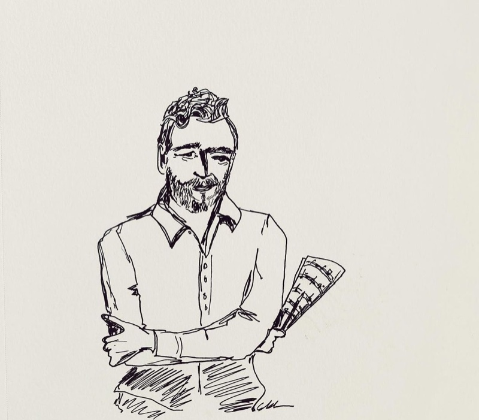

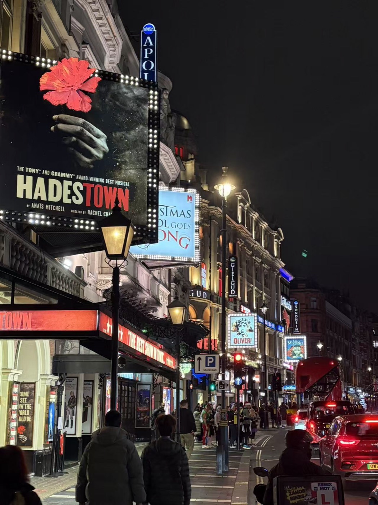
Photography
I like travelling, and I take photographs along the way: Istanbul on a Nikon Z fc, plus a few dusk photos. I like the hour when the light changes, and cities that glow after dark. More, including Cambridge, in the gallery.
Istanbul

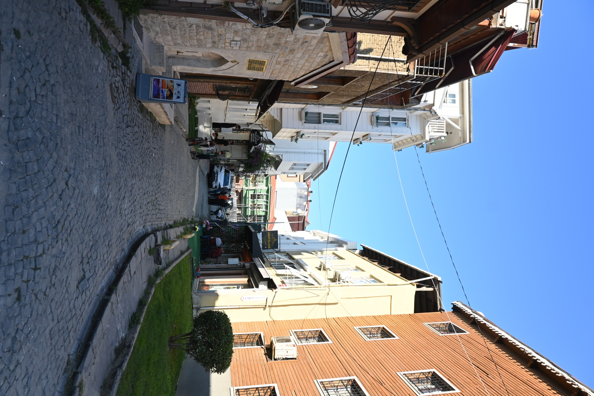

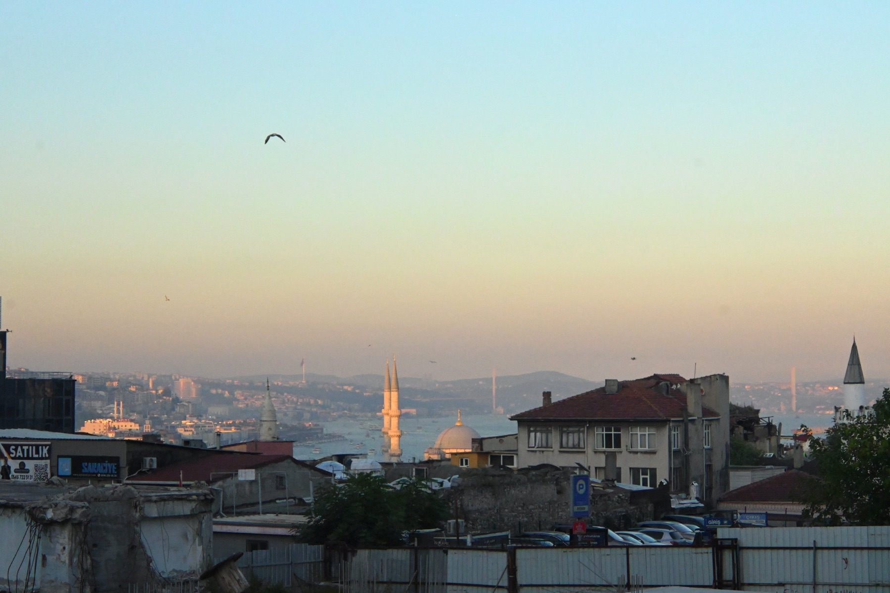


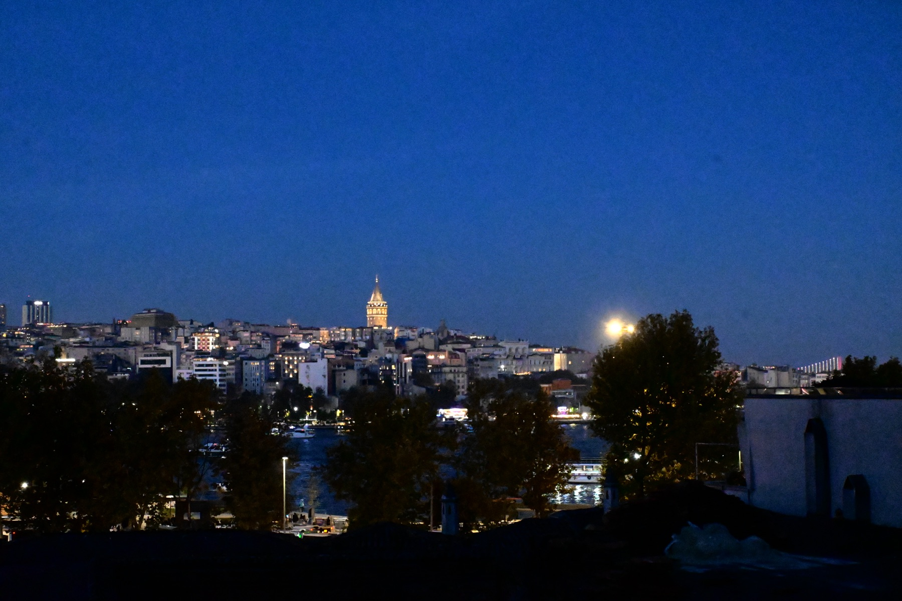

Dusk

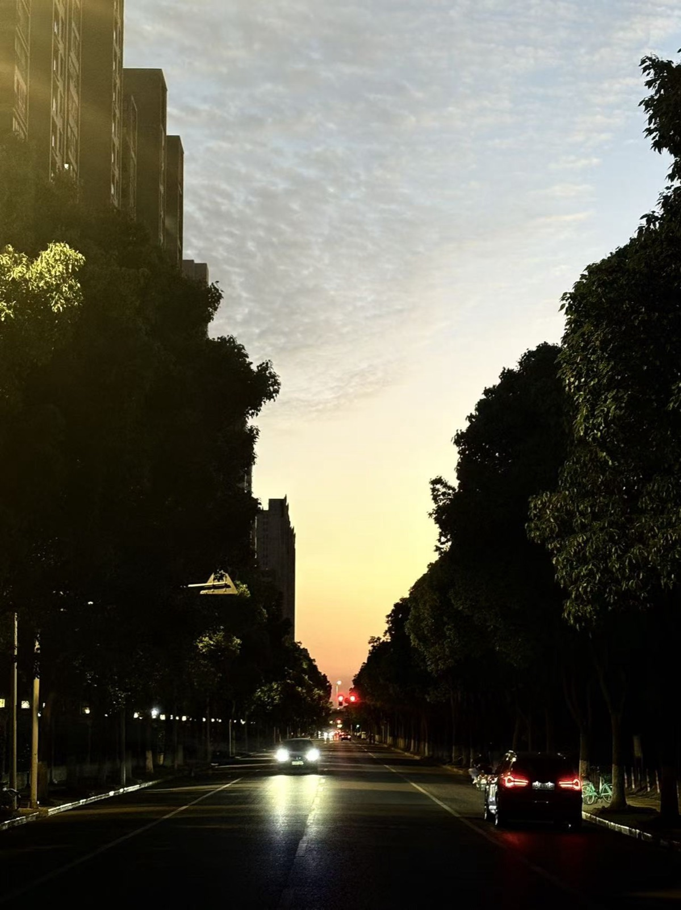


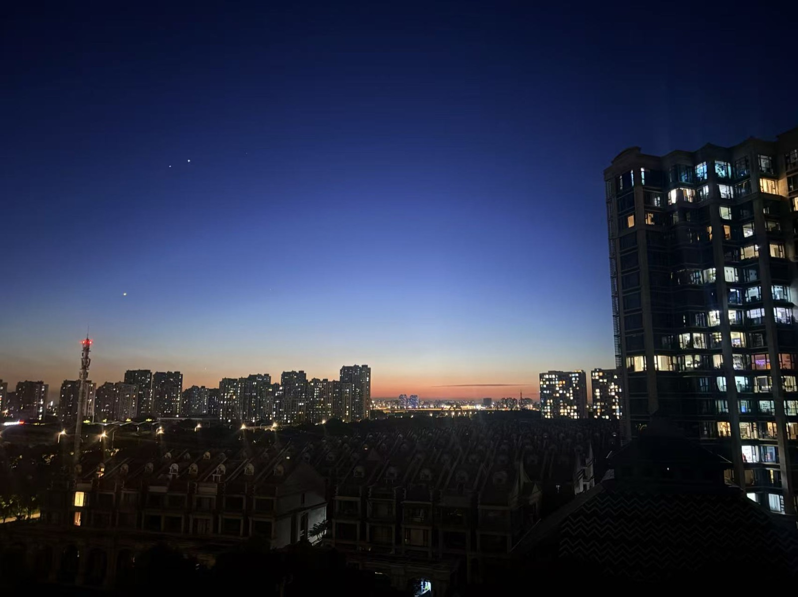

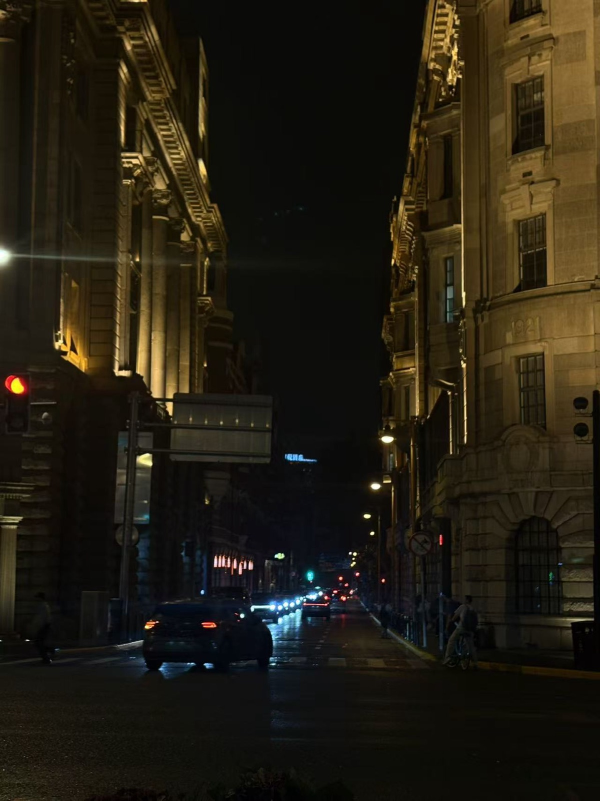
Climbing
I founded the MBZUAI Climbing Club and serve as its president. It has 50+ students, and I organize trips, community events, and activities, from venues and scheduling to safety and budget. I also boulder myself.
Singing and songwriting
I sing and write songs, including lyrics for a musical. A few lines from my notebook:
I'm climbing up to the top
From my musical adaptation of Flipped
Till where you can't take me down
And if you take my tree down
You have to take me down first
Not every pearl is cherished, not every secret revealed
“Pearl”
Not everyone sees through appearance
The hidden pearl is in you, it's in every one of us
There's something down beneath us, there's something that we can't touch
缘分是什么呢
是人群之中与你对视的那一瞬
缘分是什么呢
是四处环顾发现你就在背后的那一刻What is fate?
“缘” (English translation mine)
The instant our eyes meet in a crowd.
What is fate?
The moment I look around and find you right behind me.
Read the stars
“EMo”
Write some songs
A musical
On Broadway
Or on Sunday
In the park
Every sunrise reminds me of your smile
From a love song
Every late-night text stays with me a while
You laugh, and I forget my own name
You speak, and I'm never the same
Wake up to see you
“Home”
Going to bed knowing you're there
Hugging you from the back when we're
Cooking
Singing songs
Fighting with one another
All the scares and darkness
I'll keep them beyond
Everything you like
“Everything I know”
Everything you want
And every hoodie that you ever bought
Is still lying in my closet waiting for their owner to come home
Games
I play Stardew Valley, Elden Ring, Cities: Skylines, Cyberpunk 2077, and more. The screenshots here are official store images.
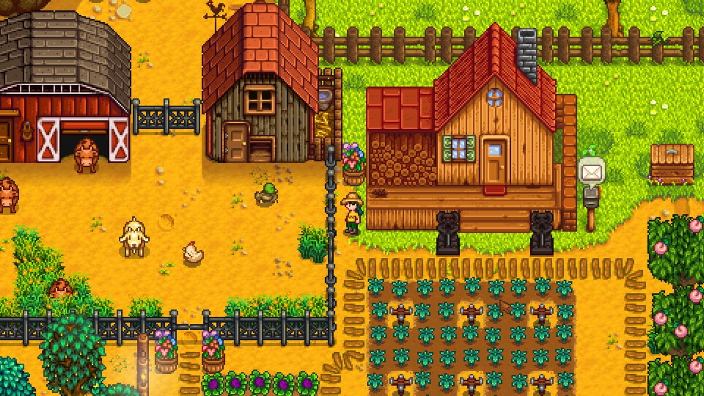
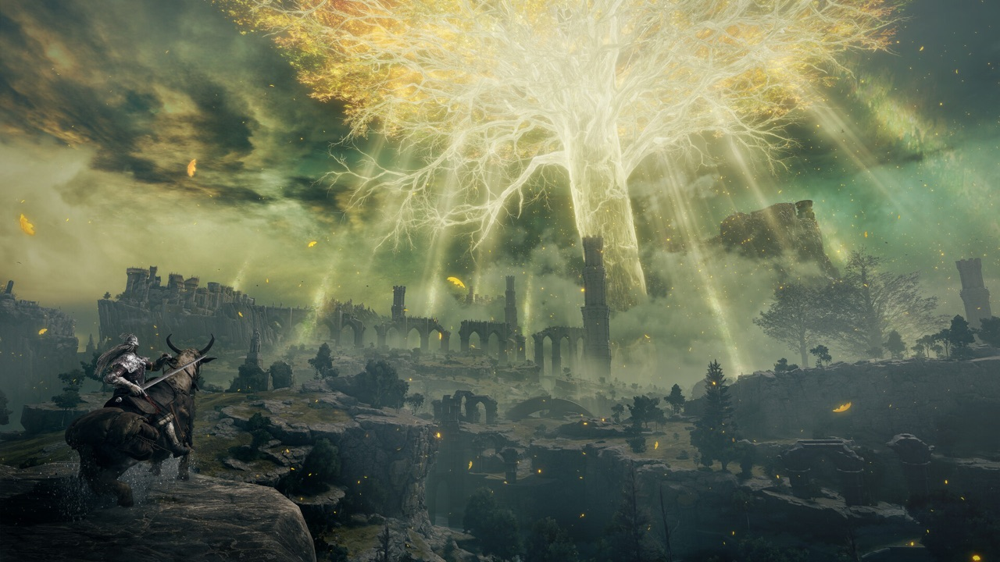
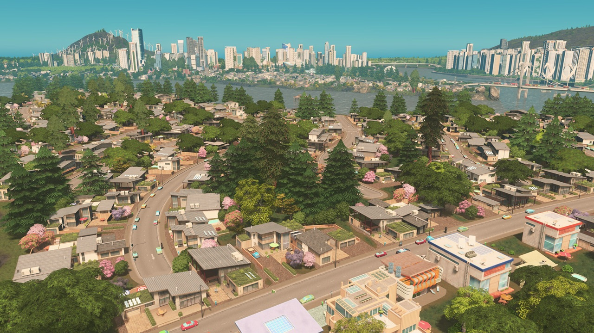
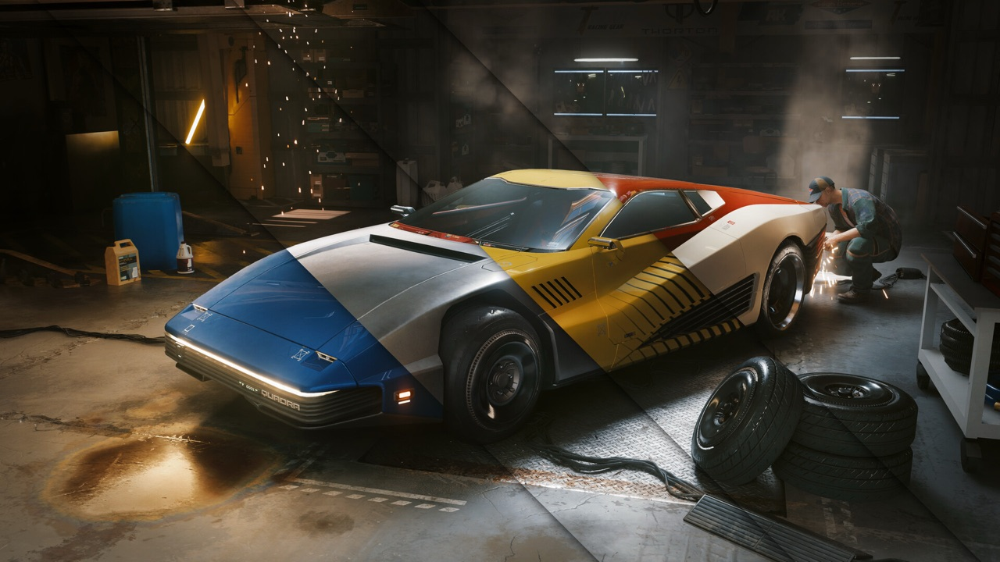